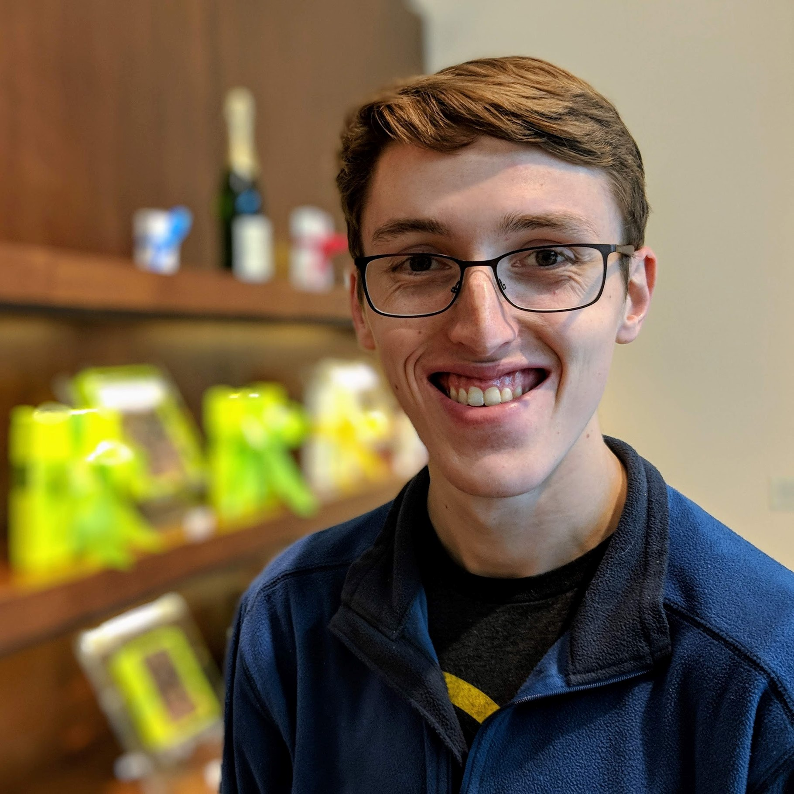

The programmer, like the poet, works only slightly removed from pure thought-stuff.
He builds his castles in the air, from air, creating by exertion of the imagination.
Few media of creation are so flexible, so easy to polish and rework, so readily capable of realizing grand conceptual structures....
Yet the program construct, unlike the poet's words, is real in the sense that it moves and works...showing things that never were nor could be.
About
I'm Joe Cowman, a software engineer from Omaha, Nebraska.
Computers have fascinated me for most of my life. I put that quote by Fred Brooks at the top of this page because it does a great job explaining why I fell in love with building software. My dad, an architect, first exposed me to programming when I was in elementary school―and I've basically been obsessed ever since.
I started out making drag-and-drop games in GameMaker Studio. In middle school, I was building Pong clones in Flash. I spent my sophomore year of high school teaching myself Python, and I knew that I was meant to be a software engineer.
Now I'm in my third year at the University of Nebraska―Lincoln, where I'm studying for a Bachelor's in Computer Science through the Jeffrey S. Raikes School of Computer Science and Management. I've had several internships so far, which have been incredibly valuable. I plan to go into the industry after I graduate, either working for a tech company that excites me or starting my own.
In my free time, you can often find me hacking on one of my personal projects, making music, or spending time with the people I love.

Focus Areas

Using Technology to Help Others
Inspiring kids in STEM through coaching.
Developing tech solutions for nonprofits.
Building apps that empower others.
Telling Stories through Software
Designing a platform for developers of story-driven games to connect with players in new ways.
Participating in gamedev competitions.

Building a Better Web
Contributing to open-source projects that I care about and open-sourcing my own.
Creating tools to make the internet more accessible to everyone.
Skills
Client-Side Development
TypeScript
JavaScript
HTML
CSS
Gulp
Mocha & Chai
npm
Library Design
Service Engineering
C#
Java
Groovy
ASP.NET
SQL
Spring Framework
RESTful Web Services
Continuous Integration & Deployment
Communication
Entrepreneurship
Technical Writing
Public Speaking
Teaching
Experience
Explorer Intern
I was on Microsoft's Web Platform Data & Intelligence team, which mainly does data analytics for the Edge browser. My summer project was to develop an extension for Microsoft Edge that fixes web pages with incorrect character encodings, meaning that text in other languages would not appear properly. I worked with a team of two other interns to implement this extension, and it now has the potential to help thousands of users worldwide.
As an Explorer intern, I was able to work as both a software engineer and a project manager. This gave me a fantastic opportunity to experience life in both roles. I enjoyed the design and research aspects of project management, as well as the complex problems that I had to solve as a software engineer.
I became proficient with TypeScript, studied asynchronous programming and web architecture, and carried out a full software release cycle. I was also able to meet some amazing people and learn about areas like machine learning, AI, accessibility, and more.
Information Technology Intern
I worked at Mutual of Omaha for a year―first as a summer intern in their Omaha office, then I continued working remotely while I was at college.
I was a developer on the team that handled account management and authentication for the company. I implemented several RESTful web microservices for the team, wrote extensive unit and integration tests, and designed a system that helped migrate a legacy application to the continuous integration pipeline.
This internship strengthened my skills as a back-end developer, increasing my fluency with Java, Groovy, and the Spring Framework. I enjoyed getting to witness the team rearchitect several of its systems as cloud-based microservices, which gave me a ton of insights into software design.
Projects
Regal Framework
My project to help developers bring text-driven games and stories to players in exciting new ways.
Unloop Offline NPM
I'm helping a nonprofit organization teach computer science to people in prison by building an offline NPM archive for use in their classroom.
Game Jams
I've participated in six 48-hour game jams over the past four years, in which I built a video game from scratch over each weekend.
Pupcycle
Last year, I co-founded a startup that reduced textile waste by converting it into dog toys. I handled the store operations and built a bookkeeping system.